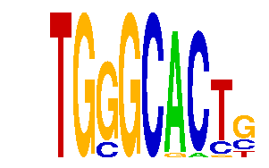

family_14 |
|---|
|  |
| Download PWM |
| Download instances (motifs) |
| Show motif distribution |
Query_ID | Query_Consensus | Subject_Name | Source_DB | Subject_ID | Length | Orientation | Offset | Divergence | Overlap | Subject_Consensus |
|---|---|---|---|---|---|---|---|---|---|---|
| family_14 | TGGGCACTG | RNGTGGGC | JASPAR | PF0140 | 8 | as given | -3 | 0.467 | 5 | GNGTGGGC |
| family_14 | TGGGCACTG | SRF | JASPAR | MA0083.1 | 12 | reverse-complement | -7 | 0.859 | 5 | GCCCATATATGG |
Sequence | Start_position (from start) | Start_position (from end) | Average conservation | Best conservation score | Instance_with_best_CS | Best_Z-score | Instance_with_best_ZS | Strand |
|---|---|---|---|---|---|---|---|---|
| chr4:140977485-140978485 | 33 | 42 | 0.291444 | 0.604 | TGSGCAMTG | 12.710033 | TGSGCAMTG | 1 |
| chr1:174420056-174421056 | 149 | 158 | 0.00255556 | 0.006 | TGSGCACTS | 12.710033 | TGGGCACYS | 1 |
| chr17:5057892-5058892 | 982 | 991 | 0.381556 | 0.773 | TGSGCACTS | 14.39867 | TGSGCACTK | 1 |
| chr4:129472154-129473154 | 519 | 528 | 0.0305556 | 0.164 | TGSGCRCTG | 12.710033 | TGSGCRCTG | 1 |
| chr13:30613042-30614042 | 799 | 808 | 0.000222222 | 0.001 | TGSGCACTS | 14.39867 | TGSGCACTK | 1 |
| chr7:19996118-19997118 | 194 | 203 | 0.516667 | 0.735 | TGSGCACKG | 16.843723 | TGSGCACKG | 1 |
| chr4:128970573-128971573 | 756 | 765 | 0.876222 | 0.972 | TGSGCACTK | 14.39867 | TGSGCACTK | 1 |
| chr7:150644976-150645976 | 244 | 253 | 0.084 | 0.581 | TGSGCACTS | 14.39867 | TGSGCACTS | -1 |
| chr18:61123056-61124056 | 698 | 707 | 0.0158889 | 0.035 | TGGGCACYS | 12.710033 | TGGGCACYS | -1 |
| chr10:120309136-120310136 | 906 | 915 | 0.000888889 | 0.004 | TGSGCACTK | 14.39867 | TGSGCACTS | 1 |
| chr3:10205625-10206625 | 169 | 178 | 0 | 0 | TGSGCACTK | 14.39867 | TGSGCACTS | 1 |
| chr10:12812465-12813465 | 959 | 968 | 0.000222222 | 0.001 | TGSGCACTS | 16.843723 | TGSGCACKG | 1 |
| chr11:114059629-114060629 | 628 | 637 | 0.000555556 | 0.002 | TGSGCACTS | 12.710033 | TGGGCACYS | -1 |
| chr17:5007078-5008078 | 571 | 580 | 0.000222222 | 0.001 | TGSGCAMTG | 12.710033 | TGGGCACYS | 1 |
| chr17:83962806-83963806 | 336 | 345 | 0.00566667 | 0.021 | TGGGCACYS | 12.710033 | TGGGCACYS | -1 |
| chr2:35115003-35116003 | 121 | 130 | 0.556222 | 0.823 | TGGGCACYS | 12.710033 | TGGGCACYS | 1 |
| chr13:34225188-34226188 | 350 | 359 | 0.000333333 | 0.002 | TGSGCACTS | 14.39867 | TGSGCACTK | 1 |
| chr8:87888211-87889211 | 537 | 546 | 0.0748889 | 0.602 | TGGGCACYS | 12.710033 | TGGGCACYS | 1 |
| chr4:137476602-137477602 | 886 | 895 | 0.00288889 | 0.009 | TGSGCACTK | 14.39867 | TGSGCACTK | -1 |